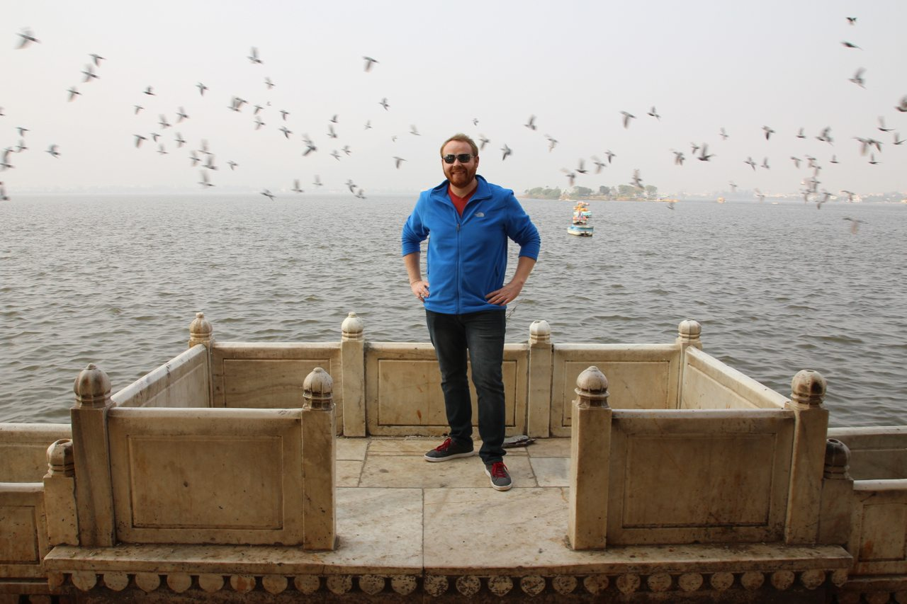

Travel Advice To Rajasthan India

Rajasthan India is one of the most sought after destinations in the world. This dusty desert plain is a throwback to a more magical time when sultans ruled and where the unbelievable power of mystics can still be felt today.
Related Post: India Travel Advice In Under 10 Minutes
I traveled to three places in Rajasthan: Jaipur, Ajmer and Pushkar. I tell my story here. If you have a story to share, please drop me a line in the comments section below.
Jaipur, Rajasthan
The Pink City, as Jaipur is known, is called as such because all the buildings here are painted a reddish pinkish color to imitate the red sandstone architecture of Mughal cities, from which Jaipur is fashioned. This western point of the famous Golden Triangle of India sits in the heart of Rajasthan and is the route that connects Delhi, Agra and Jaipur, so that should tell you something about how important of a place this is. Jaipur is the largest city in Rajasthan.
Many of India’s most infamous landmarks reside in Jaipur. The most glorious of these is the Amber Fort. To enter the fort, one must ride an elephant up the mountainside at a price steeper than the mountain its self, but it is well worth the 10-minute experience. While ascending to the fort, I dropped my sunglass case on the road far below me, but not to worry, the next elephant picked it up and handed it to me! After a short Purell bath, the case was as good as new.
Once inside the Amber Fort, we were overwhelmed by the architecture and detail work. Between the geometric gardens, facades with incredibly preserved details and surviving paintings of the Kama Sutra, the space was a lot to take in. All of that was small potatoes compared to the Sheesh Mahal (Mirror Palace). The Mirror Palace is a space within the Amber Fort, which is covered in tiny convex-shaped mirrors. The light reflecting off of all the surfaces shifts as you walk through the space and the feeling is very dazzling.
We spent a few hours at the fort and then moved along to explore the rest of Jaipur. Directly across from our hotel is the Jal Mahal (Water Palace). This palace is a manmade island and structure for which the original purpose wasn’t explained (to me), but which is now closed to the public and slated for renovation as a fine dining establishment. This 5-story structure of Rajput and Mughal styles will be a grand place to dine, but the high level of pollution in the lake will make it challenging to maintain an appetite; the foam at water’s edge was literally seafoam green.
Since we couldn’t go out to the Jal Mahal, we just took a few photos and then went into the heart of Jaipur’s old town. The second most architecturally impressive structure in Jaipur is called Hawa Mahal (Wind Palace). Aside from the stunning wedding-cake layered details of the building, it is special because of the abundance of windows, many of them only the size of a head. These windows were viewing portals for the royal family to look out on the city and people as they would gather around the front of the City Palace. With the windows open, the whole building is filled with a breeze that makes the desert’s summer temperatures more suitable for royalty.
Behind the Hawa Mahal stands City Palace, the old capital of the Rajasthan State and seat of the Maharaja of Jaipur. Much of the palace is open to the public but it is still an active royal residence, so the residential chambers are off-limits. However, you can buy a $100 ticket that will allow you to walk through the living quarters of the current Maharaja. Imagine paying $100 to walk through the Queen’s apartment at Buckingham Palace!
The City Palace is home to some pretty interesting architecture, paintings, and artifacts, including the Ganges-water urns: the two largest sterling silver objects int he world. The purpose of these vessels was to carry water from the Ganges River from India to England for the 1901 coronation of King Edward VII so that the Maharaja of that time would not have to drink the English water. The vessels are 1.6 meters (5.2 ft) height and each have a capacity of 4000 liters. They weigh 340 kilograms (750 lb) and are made from 14,000 melted silver coins.
One art piece that I thought was striking was a number of rifles and spears that were laid out in a large circle. The guns are pointing in toward the center while the spears are pointed out toward the edge. The guide said that it was to symbolize Indian strength and wealth, but I think it symbolizes the imperial occupation of Britain who had a superior military versus the Indians who had less advanced weaponry.
Ajmer, Rajasthan

My first train ride in India led me to Ajmer, a small town in the heart of Rajasthan. Ajmer is a small town of only 500,000 people (which is a small town in these parts). The town was easily walkable, which is what we opted to do for the mile journey to Daulat Bagh, a park on Lake Ana Sagar. In the park, we came across an interesting temple to Lord Shiva. I would later learn that king cobra snakes are present in all of Lord Shiva’s temples, but in Rajasthan they seem to be much more prominent. Despite this, I only came across one real king cobra snake on my journey and I was more afraid of its charmer than I was the snake its self.
After the temple, we continued on to Lake Ana Sagar, a 900-year old man made lake. The prominent feature about this lake is a 5-pavilion marble structure known as Baradari. It’s expanse of white marble overlooking the lake is beautiful; no wonder the tourists flourish to this site.
We only had a few hours to spend in Ajmer, so after finding a quick coffee we hailed a cab and moved on to the nearby town of Pushkar where we embarked on an overnight camel safari.
Pushkar - Religious Center of Rajasthan

Pushkar is one of the most significant pilgrimage sites for Hindus. Hindus believe that Lord Brahma, the Hindu god of creation, created Pushkar. Despite the significance of Lord Brahma, there are very few temples in the world are dedicated to him, thanks to the Curse of Savitri. The Pushkar temple is, however, the most significant of the Brahma temples and viewed by many as the only legitimate temple. Pushkar is widely considered to be one of the most religious places in the world.
As legend has it, Lord Brahma killed the demon Vajranabha while it was attempting to murder his children. Lord Brahma’s weapon is the lotus flower. Upon striking the demon Vajranabha, three petals of the lotus flower fell to the Earth and created three lakes, including the lake at the center of Pushkar, which would later be visited by Lord Brahma himself. During his visit, he married a consort who was not his wife, Savatri. When Savatri learned of this marriage, she cursed Lord Brahma such that he would never be worshiped except for in Pushkar. It is because of this act that the Pushkar temple is considered to be the only temple that can be or should be dedicated to Lord Brahma.
The lake which Lord Brahma’s lotus flower petals formed in Pushkar is the other majorly significant site to see in Pushkar. I was told that the name of the lake is “Moon Lake,” but I’ve not been able to find any reference to that name online; most places just call it the “Pushkar Lake.” A dip in this lake is to Hindus of similar significance what a submersion in the Jordan River is to Christians. Swimming here cleanse sins and can cure skin diseases.
Though seeing these significant sites was highly meaningful toward my greater Indian experiences, the real draw that brought us to Pushkar was for a desert camel safari! If you’re ever in the area and seeking an adventure, I highly recommend getting in touch with the folks at Pushkar Desert Safari. We made our safari trip in December, which is very much in the off-season. My travel companion and I were the only customers this weekend, so we got to have a special experience. We met our guides near the Brahma temple and were taken by motorcycle (yikes!) to where the camels were waiting for us. We loaded up and started through the town. We stopped at the Moon Lake and went down to the waterfront where we had Brahmin priests bless us for our journey.
The sun was setting as we ventured away from Pushkar, and we had the most breathtaking desert landscapes changing colors with ever blink right in front of us. We even saw a Gazelle in the wild! I tried to take a lot of pictures of this, but very few of the photos came out thanks to the low light and the bumpy camel ride.
It took us about two hours to reach our destination. Our camping spot was just a patch of sand with tent made of tarps. Inside the tent were two raised platforms we turned into beds with the pads that had been on top of the camel, acting as our saddle. The treatment we received at the camp was epic. We huddled around a fire; it was very cold, and the guides (7 of them!) prepared dinner. This food was easily the best thing I ate anywhere in India in my entire life. After dinner, we went right to sleep, and it is probably the hardest I have ever slept. I was exhausted. The desert air was so pure, but has it’s own smell which was new to me. It was a great atmosphere for rest.
I woke at morning’s first light, and the guides already had ginger tea hot and ready. We had a quick breakfast and then started to head back to Pushkar. My camel, Romeo, behaved pretty well the day before but on the way back to Pushkar we had a hard time controlling him. Apparently there were several turns we could have made (but didn’t) which would have taken him to his girlfriend. He was not happy about not getting to see her. Camels are much taller than horses, and I was pretty scared of getting thrown off. My guide was confident that we wouldn’t get bucked, but I am still impressed that we didn’t! In the end, we prevailed over Romeo and got safely back to Pushkar.
Once back in Pushkar, we had to move quickly to make our bus back to Jaipur. Our bus departed from Ajmer and to get back there we had to haggle with a driver pretty hard. He only agreed to take us after we decided to walk away, which is a great negotiating tactic. The guy chased us down and decided to drive us to Ajmer on a back road that seemed very much in the wrong direction and Google Maps seemed to confirm that we were just being taken out into the desert. This was a pretty scary moment trying to figure out if we were being kidnapped, but in the end, the road we were on took us exactly where we were trying to go and the driver was a pleasure to ride with. But you never know… All in all, this trip was one for the ages and I encourage you to visit Rajasthan when you have the chance!
Questions? Additions? Please write your thoughts in the comments section below or get in touch with me at @judsonlmoore!